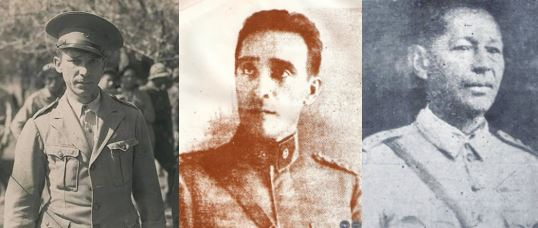

- Cavalry Lieutenant Colonel Alfredo Ramos Ríos
He was born on March 17, 1903, in the city of San Juan Bautista de las Misiones.
He was the founder of forts in the pre-war before the imminent war with Bolivia, Captain Alfredo Ramos was commissioned to the Missions for the selection of recruits with whom to complete the cadres of the Cavalry Regiment No. 2 "Cnel. Toledo".
In December 1932 he assumes command of the R.C. 1 "Valois Rivarola" which he reorganized into six cadres, became an elite unit that began its unparalleled campaign of victories. At his command, the No. 1 Cavalry Regiment “Coronel Valois Rivarola” recovers its morale.
Major Ramos was decorated with the Cruz del Chaco.
He passed away in Asunción in 1991, he was married to Luisa Abbate.
- General Juan Bautista Ayala
He was born in Pilar (Ñeembucú), on June 24, 1889, who would have a great performance in the Chaco War.
He was one of the first Paraguayan officers who knew the Chaco soil, since in 1921 he was in this region of the country commissioned to verify the Bolivian advance in the Pilcomayo area.
He made a brilliant performance with the first operational plans of the Paraguayan army. Once hostilities began, he did an excellent job in organizing the mobilization and preparation of new units and logistical support.
In the post war period, already Brigadier General, Ayala was Minister of War and Navy in the cabinet of Dr. Félix Paiva, and Commander in Chief of the Armed Forces. of the Nation. Ambassador to the government of the United States of America, he joined the Paraguayan Delegation to the San Francisco Conference, which resulted in the creation of the United Nations in 1945.
He passed away in 1981; he was married to Juana Perrier.
- 1st Lieutenant Manuel Irala Fernandez
Born on June 1, 1893 in Concepción, a character who came touched to be a legend, the Paraguayan people would give him the immortal nickname of him: "Yakaré Valija".
The Lt. Irala Fernández stood out during the Chaco War for his distant patrols in the enemy rear, he was a great connoisseur of Chaco soil.
His greatest performance was in the Battle of Fortín Toledo, where he practically only slipped behind enemy lines and like the heroes of our great epic of 1970, he captured an entire squad.
Yacaré Valija bears that nickname because during the Revolution of 1922 it was introduced to the enemy line unnoticed and it is there that he finds a suitcase made of alligator (crocodile) skin, the suitcase contained a map, location of the rest of the camps and a notebook with thousands of annotated data, town by town.
It was Major Félix Cabrera who congratulated him after that important mission and said: "Nde Manuel, you entered the suitcase like alligator."
After the war he got married and lived until his death on April 2, 1979 in the city of Luque, a city that awarded him as a posthumous tribute, the title of "Favorite Son".